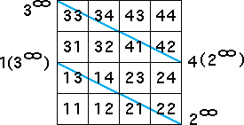

| Taking the fixed points at the ends of an edge of the square gives the horizontal or vertical lines already studied. | |||||
| The only other option is to take the fixed points at the ends of a
diagonal of the square. For example, suppose we take | |||||
| To obtain parallel lines we have two choices for the images of these fixed points: | |||||
| 1(3)∞ and 4(2)∞ | |||||
| As before, we look at the length 2 address squares through which the lines must pass. | |||||
|  | |||||
| and obtain | |||||
| 3 → 3, 4 → 3, 1 → 4, 2 → 4, 3 → 1, 4 → 1, 1 → 2, and 2 → 2 | |||||
| Here are the table, graph, and plot. Indeed, we obtain two lines. | |||||
| Exercise 1 How many pairs of slanted lines can be generated in this way? Try it first before consulting the answers. | |||||
| Exercise 2 Can either of these lines be generated independently of the other? Try it first before consulting the answer. |
Return to Line pairs from a fixed point and its image.